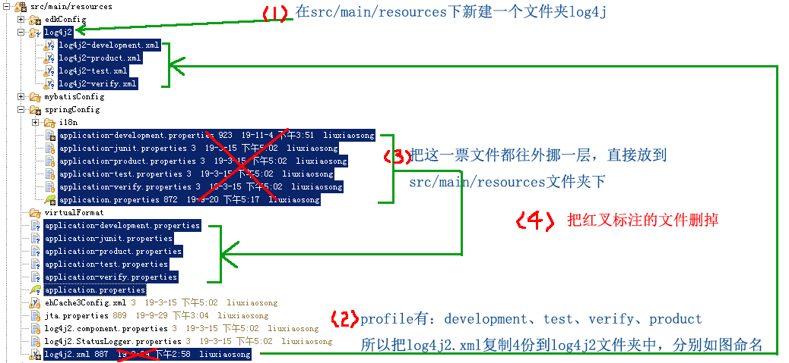

<!-- 对于application.properties我们提供了按不同的profile进行配置的做法。对于运行日志文件也同样提供了套路，因为，不同环境保存日志的位置一般都不同，而且level要求也不同。 按profile分开配置的好处：对下面标红的部分，你不用每次发布前都手工改一遍。 --> ... <Properties> <Property name="LOG_HOME"> 保存日志的文件夹，例如：/home/applicationLogs/yourProjectName-dev </Property> <Property name="PROJECT_NAME"> 日志文件名，例如：yourProjectName </Property> </Properties> ...
